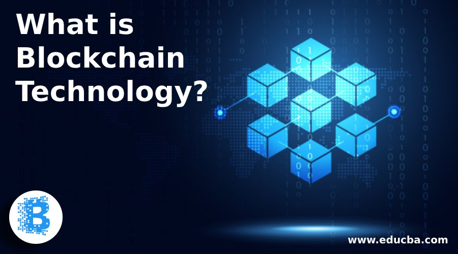
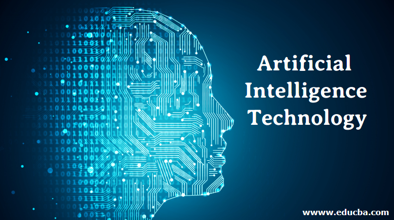
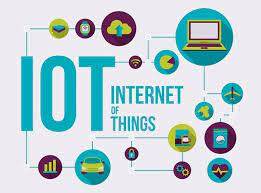
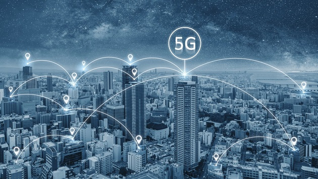

Cloud computing is a general term for anything that involves delivering hosted services over the internet.Cloud computing can also be thought of as utility computing or on-demand computing.
A cloud can be private or public. A public cloud sells services to anyone on the internet. A private cloud is a proprietary network or a data center that supplies hosted services to a limited number of people, with certain access and permissions settings. Private or public, the goal of cloud computing is to provide easy, scalable access to computing resources and IT services.
Cloud infrastructure involves the hardware and software components required for proper implementation of a cloud computing model
Robotics
Robotics is an interdisciplinary sector of science and engineering dedicated to the design, construction and use of mechanical robots. Our guide will give you a concrete grasp of robotics, including different types of robots and how they're being applied across industries.
Robotics is the intersection of science, engineering and technology that produces machines, called robots, that substitute for (or replicate) human actions.
A robot is the product of the robotics field, where programmable machines are built that can assist humans or mimic human actions. Robots were originally built to handle monotonous tasks (like building cars on an assembly line), but have since expanded well beyond their initial uses to perform tasks like fighting fires, cleaning homes and assisting with incredibly intricate surgeries. Each robot has a differing level of autonomy, ranging from human-controlled bots that carry out tasks that a human has full control over to fully-autonomous bots that perform tasks without any external influences.
Blockchain

Blockchain is a system of recording information in a way that makes it difficult or impossible to change, hack, or cheat the system.
A blockchain is essentially a digital ledger of transactions that is duplicated and distributed across the entire network of computer systems on the blockchain.Each block in the chain contains a number of transactions, and every time a new transaction occurs on the blockchain, a record of that transaction is added to every participant’s ledger. The decentralised database managed by multiple participants is known as Distributed Ledger Technology (DLT).
Blockchain is a type of DLT in which transactions are recorded with an immutable cryptographic signature called a hash.
AR/VR
What is AR
Almost any person with a smartphone can get access to augmented reality, making it more efficient than VR as a branding and gaming tool. AR morphs the mundane, physical world into a colorful, visual one by projecting virtual pictures and characters through a phone's camera or video viewer. Augmented reality is merely adding to the user's real-life experience.
What is VR
Virtual reality takes these same components to another level by producing an entirely computer-generated simulation of an alternate world. These immersive simulations can create almost any visual or place imaginable for the player using special equipment such as computers, sensors, headsets, and gloves.
3D Printing
3D printing, or additive manufacturing, is the construction of a three-dimensional object from a CAD model or a digital 3D model.[1] The term "3D printing" can refer to a variety of processes in which material is deposited, joined or solidified under computer control to create a three-dimensional object,[2] with material being added together (such as plastics, liquids or powder grains being fused together), typically layer by layer
In recent years, 3D printing has matured into an excellent solution for many kinds of production parts, and other manufacturing technologies (like CNC machining) have become cheaper and more accessible for prototyping.
Artificial Intelligence

Artificial intelligence (AI), the ability of a digital computer or computer-controlled robot to perform tasks commonly associated with intelligent beings. It is the simulation of natural intelligence in machines that are programmed to learn and mimic the actions of humans. These machines are able to learn with experience and perform human-like tasks.
AI automates repetitive learning and discovery through data. Instead of automating manual tasks, AI performs frequent, high-volume, computerized tasks. And it does so reliably and without fatigue
IOT

The Internet of Things (IoT) describes the network of physical objects—“things”—that are embedded with sensors, software, and other technologies for the purpose of connecting and exchanging data with other devices and systems over the internet. These devices range from ordinary household objects to sophisticated industrial tools.
The IoT is a giant network of connected things and people – all of which collect and share data about the way they are used and about the environment around them.
Home automation is one of the best examples of IoT. Smart homes or IoT-based home automation systems are becoming popular day by day. In a smart home, consumer electronic gadgets such as lights, fans, air-conditioners, etc. can be connected to each other via the internet.
5G

5G is the fifth generation of cellular technology. It is designed to increase speed, reduce latency, and improve flexibility of wireless services. 5G technology has a theoretical peak speed of 20 Gbps, while the peak speed of 4G is only 1 Gbps.
5G also promises lower latency, which can improve the performance of business applications as well as other digital experiences (such as online gaming, videoconferencing, and self-driving cars).